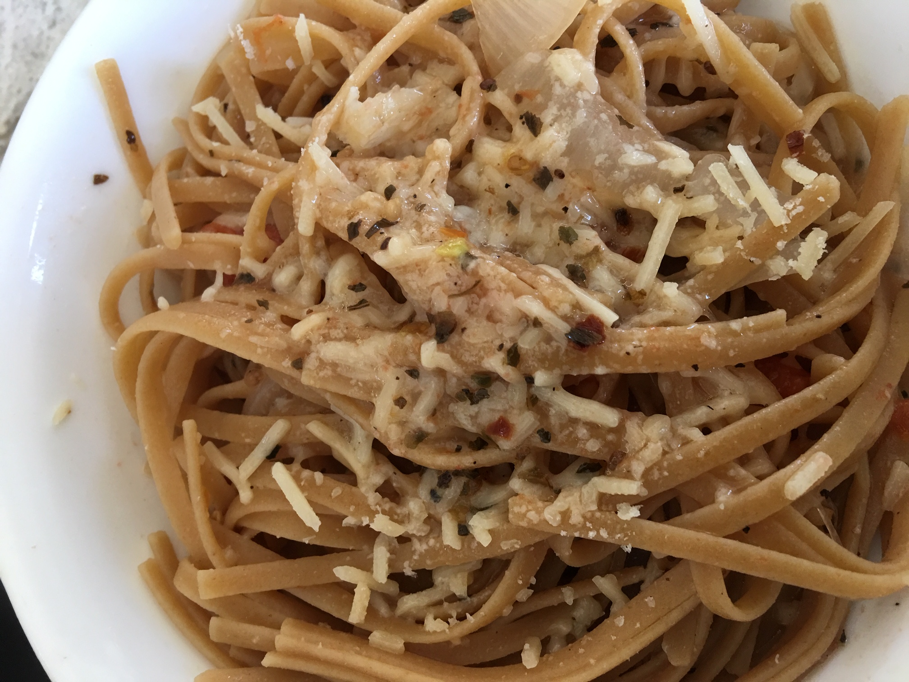

Recipe: Simple Pasta

Ingredients:
- 1 lb linguine
- 1 lb grape tomatoes, halved
- 1 onion, thinly sliced (reduce crying by cutting and adding last)
- 5 cloves garlic, crushed or thinly sliced
- 1 tsp red pepper flakes
- 2 tsp dried basil
- 3 tbsp olive oil
- 2 tsp salt
- 1 tsp ground black pepper
- 1 cup water
- Freshly grated parmesan cheese
- Etxra olive oil, salt and pepper
Instructions:
Although I love quick and simple dump-in-a-pot recipes,
if you are willing to sacrifice a few extra minutes,
then you might prefer the following recipe to the
dump-in-a-pot version.
Cook the pasta as per usual, in a big pot. Saute the onions
before adding garlic and inhale the smell a little. Then add the
tomatoes. The result is a sweeter and tangier taste to the sauce. I have to admit, this one is my favorite.
- Boil pasta in pot, until al dente, about 8 minutes.
- Saute onion in olive oil until slightly brown, in a large skillet.
- Add garlic, red pepper flakes and stir until you smell the garlic.
- Add tomatoes, dried basil, salt, pepper, 1 cup water (or stock) and stir. Boil for 5 minutes.
- Mix tomatoes and onion sauce with pasta.
- Serve in bowls. Add (at least 1 tsp) parmesan to taste.
- Add olive oil, freshly ground salt and pepper to taste.
Alternate One-Pot Pasta instructions